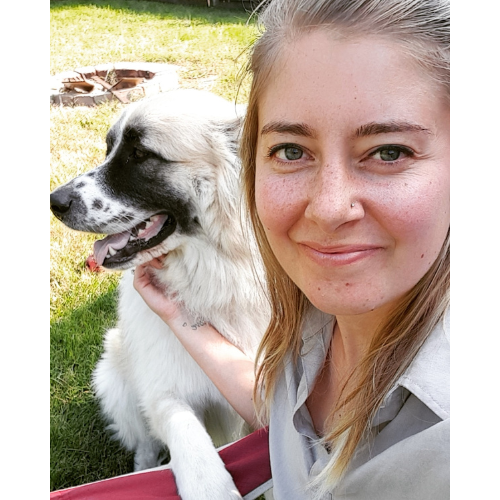

About Me

The Details
Hey there! Nice to meet you!
My name is Taylor. I am a teacher turned UI designer with a passion for creating beautiful user-friendly designs. I love all things UI, UX, and graphic design and love to explore the intersection between them all.
My goal is to become a valuable contributor to the UI community and have the opportunity to continuously learn more about the field.
When I am not designing, I am enjoying time outside with my family and dogs. I love to travel and try new foods.
Download My ResumeSkills & Tools
Skills
- User Interface Design
- Prototyping
- Usability Testing
- User Research
- Logo Design
- Wireframing
- HTML, CSS, JavaScript